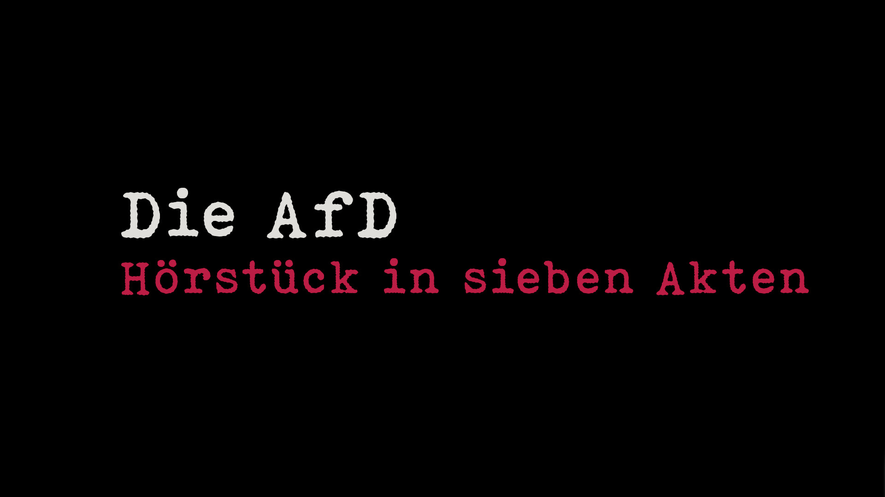

Hörstück

Hinweis: Der Ladevorgang kann je nach Serverauslastung
auf archive.org einen Moment dauern.
ein politisch-satirisches Gedicht von B. Bürger
Tauchen Sie ein in den mentalen Mikrokosmos der AfD und der Neuen Rechten: Dieses Battle Poem führt Sie mit satirischem Ernst durch sieben Akte unerfreulichen Denkens und Fühlens – als Hörstück und Textversion.

Hinweis: Der Ladevorgang kann je nach Serverauslastung
auf archive.org einen Moment dauern.
Vorhang auf, nun spricht - oh Graus! -
Herr Curio zum Hohen Haus,
der Doktor weiß das Wort zu wetzen
und liebt es, kultiviert zu hetzen,
wünscht allen Deutschen Gottes Gnad'
für einen christlichen Dschihad,
denn an der nächsten Ecke schon
steht stichbereit der Talahon!
Der Schwarze pflanzt sich im Akkord
in jeden Landeswinkel fort,
die Paschas ziehen tüchtig mit,
ihr Kampfgerät hängt stets im Schritt!
Der Herrenmensch? Hinkt hinterher -
und dabei war er doch mal wer!
Es sind noch keine tausend Jahre,
da liegt sein Volk fast auf der Bahre -
früher, in den guten Jahren,
gebar die deutsche Frau in Scharen,
doch Mutterkreuz wich Rassenmix,
da hilft auch Piefkes Stammbaum nix!
Wenn Michel in der Stube hockt,
kein Weib ihn aus der Bude lockt -
statt echter Frauen nur "me too"
und anderer Emanzenschmu -
so ist der deutsche Mann schon lange
auch fleischlich nicht mehr bei der Stange:
Statt endlich mal Vollzug zu melden,
begnügt er sich mit Pornohelden –
doch dämmert es in unserm Land,
liegt auf der Pirsch der Asylant
und greift aus seinem Schattenfleck
dem Deutschen seine Töchter weg!
Drum kräht der Krah aus voller Brust,
beschwört die nationale Lust:
"Erben zeugt aus Preußenhoden
für unser Blut und unser'n Boden!"
Der prüde Gutmensch - Tugendheld! -
verbessert kleinlich uns're Welt,
Gesinnungsethik gibt ihm Halt,
wenn um ihn her das Leben wallt:
Voll Scham verleugnet er den Kitzel
vom saftigen "Zigeunerschnitzel"
und kompensiert aus tiefem Frust
mit Soja-Würstchen seine Lust,
nie lässt er sich vom "Neger" küssen,
kennt statt dem Können nur das Müssen –
und glaubt er, unentdeckt zu sein,
so schlürft er doch statt Wasser Wein!
Das Volk wird stetig abgeschafft,
bis auch sein Zungenschlag erschlafft:
von fremden Wörtern überformt,
von linken Spinnern umgenormt –
Goethes, Schillers Deutsch entstellt
im Gender-Wahn der woken Welt!
Das Maskulin steht einsam da,
wo's gestern noch generisch war!
Warum? Das Weib fand sich zu klein,
wollt' mehr als Adams Rippe sein.
Doch beide machte bald zum Knecht
das invasive Drittgeschlecht!
Selbst uns're klassischen Pronomen
will dieser Popanz nicht verschonen:
"Er", "sie" und "es" als Personal
sei'n viel zu wenig an der Zahl -
so nagt am Status quo
LGBT und Co!
In Zwangsgedanken tief versunken,
hört man den Baumann panisch unken -
er fürchtet sich im Dunkeln schnell
als biodeutscher Infidel!
Gauland, vormals Demokrat,
fand rasch ins neue Habitat:
Als Fahnenflüchtling - doch mit Ziel -
gab ihm die AfD Asyl,
statt sich auf Wahlen zu versteifen,
bevorzugt er das Machtergreifen:
"Erst jagen, dann entsorgen!",
sind seine Tipps für morgen.
Brandner, ewiger Hansdampf,
erquickt sich gern am Schicksalskampf:
Von oben will der Klassenclown
herab auf and‘re Rassen schau'n!
Frohnmaier preist die deutsche Art,
die sich dem Fremden stets verwahrt,
im Handumdreh'n und jederzeit
bewältigt er Vergangenheit:
Ob weiße oder schwarze Schuld,
ob Führer- oder Judenkult -
sollt' einer ohne Sünde sein,
so werfe er den ersten Stein!
Trotz 34 Lebensjahren
konnt' er sich seinen Schneid bewahren:
Der Selfmade-Abiturient
wär' gern Ministerpräsident!
Am Rednerpult schärft ihr Profil
Frau Weidel ganz im Freisler-Stil:
Die Altparteien, voller Wonne,
kloppt sie in die Restmülltonne!
Beim Mammon wird sie defensiv,
der monetäre Geiz sitzt tief:
Für andere Almosen zahlen,
bereitet ihr stets große Qualen -
die AfD kennt prämortal
nur Arbeit, Steuern, Kapital!
Gefolgsmann Grauf, dem armen Tropf,
schwirr'n viele Wünsche durch den Kopf,
die seinem Glück im Wege steh'n,
weil sie nie in Erfüllung geh'n:
"Vernichten!, Foltern!, Unterjochen!"
liegt ihm zwar fraglos in den Knochen -
doch der Bedarf wird hier und jetzt
nur äußerst niedrig angesetzt.
Als Massenmörder-Aspirant
erlebt er einen schweren Stand:
Statt einer echten Einsatzgruppe
bleibt ihm nur Höckes Gurkentruppe!
Großdeutschland? Ist ein alter Hut -
Großerlach tut‘s genauso gut!
Doch der Faschist von nebenan
bleibt zäh am Ball, so gut er kann.
Blender von Beruf und Prahler,
alimentiert vom Steuerzahler,
verhetzen aus dem Parlament
das Volk, wie es sich gerne nennt -
vom Drama des Gewissens frei
ist ihnen Anstand einerlei,
statt Lügenpresse – viel zu lau! -
gibt's Fakten Marke Eigenbau -
tagein, tagaus verkünden sie
dieselbe Endzeitmelodie.
Ob Ahnenpass, ob Doktortitel,
sie lieben jedes Aufputschmittel,
ohne Lobpreis und Verehrung
droht ihnen rasche Sinnentleerung –
Kritik, und sei sie noch so schlicht,
erschüttert leicht ihr Gleichgewicht!
Der Neupartei mit altem Kern
liegt Nächstenliebe eher fern -
Mitgefühl und Empathie
sind hier nur graue Theorie,
von Schadenfreude abgeseh'n,
ist Spaß ein rares Phänomen,
doch dafür pflegt man jederzeit
ein hohes Maß an Selbstmitleid.
Im Drang nach Macht und nach Kontrolle
kriegt man sich laufend in die Wolle
und bleibt doch - dank demselben Feind –
vorerst zu einer Kraft vereint.
Kurzum: Ein Schuss Soziopathie
fehlt AfD-Genossen nie,
doch da sie Diagnosen meiden,
erkennen sie bei sich kein Leiden.
Das Grundgesetz schätzt Höcke sehr,
tut sich nur mit dem Inhalt schwer:
Dem Schwachen macht es alles recht,
der Starke aber wird zum Knecht!
Moralapostel, Bürokraten,
devote Winkeladvokaten,
Bedenkenträger und Vasallen,
vom deutschen Geiste abgefallen:
Ihr weltverlorenes Geschwätz
wurd '49 Grundgesetz!
Und Höcke - immer hilfsbereit -
nimmt sich aus diesem Anlass Zeit,
treu seinem Schwur vor vielen Jahren,
das Volk vor Schaden zu bewahren,
empfiehlt als beste Medizin,
die Samthandschuhe auszuzieh'n,
denn jegliche Berechtigung
entsteht aus Selbstermächtigung.
Parlamente? Schön und gut -
Geschichte schreibt man nur mit Blut!
Wo eitle Paragrapen schwinden,
erwacht gesundes Volksempfinden!
Dem regen Heimat-Philologen
ist manches deutsche Herz gewogen,
sein Geist ist flach, doch gut bestellt,
gefurcht wie ein Kartoffelfeld,
auf seiner autochthonen Scholle
verteidigt er die Opferrolle –
und zeigt trotz aller Hindernisse
auch Sinn für faire Kompromisse:
"Die Meinungsdiktatur in Ehren! -
doch bitte frei von linken Lehren,
denn Multikulti, Regenbogen
gehören endlich glattgezogen."
Der Volksvordenker Kubitschek
wünscht sich den linken Zeitgeist weg,
das kranke Vaterland zu heilen
und dabei kräftig auszuteilen!
Als Freund gepflegter Diktaturen
folgt er den altvertrauten Spuren,
denn was ihm immergültig scheint,
wird von der Republik verneint!
So legt der stramme Freigeist dar,
wie es schon früher einmal war:
Um Großes, Neues zu erbauen,
muss man das Alte niederhauen -
"Macht entfalten", "Macht erhalten"
heißen seine Urgewalten!
Ein Bürgerkrieg ist unausweichlich,
denn Volkszersetzer gibt es reichlich -
mithilfe langer Feindeslisten
gilt es, den Stall ganz auszumisten!
Für rechten Schwung zur rechten Zeit
steh'n Heise und sein Trupp bereit -
mit Baseballschläger-Expertise
eskaliert er jede Krise –
Thoralf - sei er noch so klein -
stählt seine Faust in Prügelei'n,
Brunhilde malt ein Hakenkreuz -
den stolzen Nazi-Papa freut's!
Jungfrau Edda, Jungmann Trutz
suchen unterm Esstisch Schutz:
Wie im Bunker bei Alarm
sitzen sie dort Arm in Arm.
Zum Tanz verführ'n die süße Ida
dunkelbraune Heimatlieder,
Nordulf, ganz bei sich im Traum,
gibt seinen Wünschen Lebensraum:
.. Als Ritter, fest in Rotbarts Bann,
vernichtet er den Muselmann,
später muss er nachjustieren,
den Itzig auch zu liquidieren -
und, lieber Gutmensch, morgen
wird er auch dich entsorgen ..
Auch Landogar bricht eine Lanze
für's nationale Große-Ganze:
Den Volkstod will er niemals sterben -
viel lieber Vogelscheiße erben!